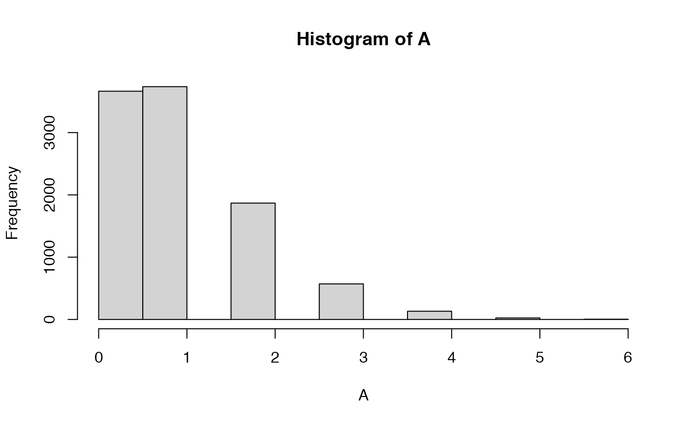
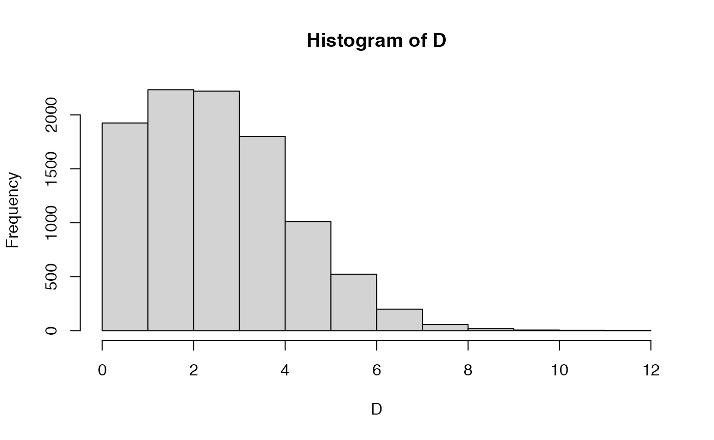
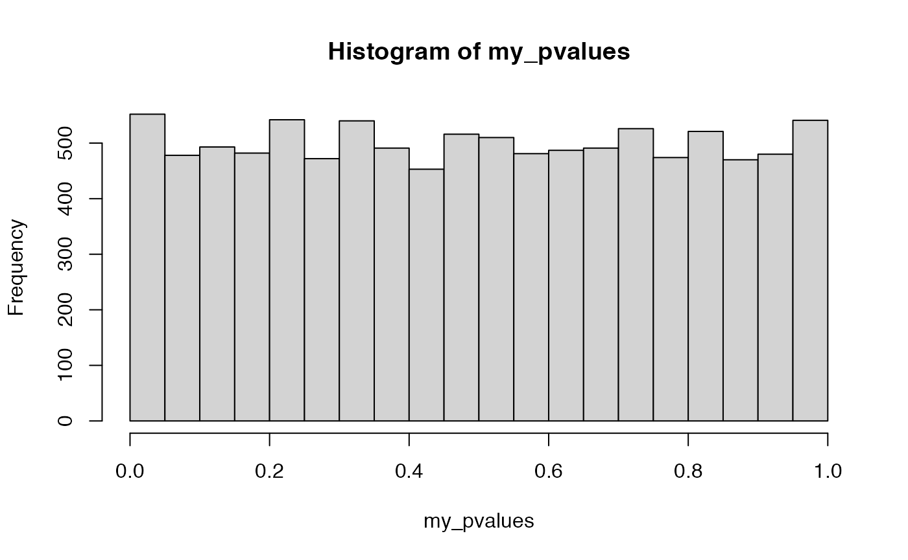
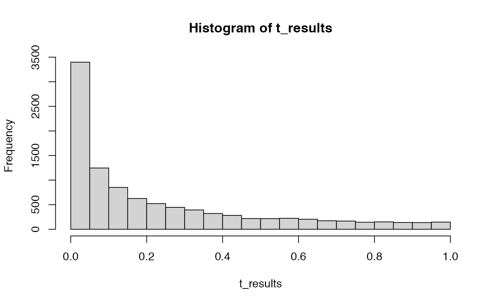

Lab6
Natalie Palmer
3/16/2022
Lab6.Rmd- Section 12.3.3 from your textbook refers to: The problem with replications of a meaningless experiment: ‘alpha and the captain’s age’. The issue here is that if you run an ineffectual experiment enough times you can always find a significant result by chance. The textbook mentions that if you repeat an experiment 20 times, you are guaranteed to find a significant result with .64 probability, and the probability is .92 if you repeat the experiment 50 times.
Make use of the rbinom() function to show you can reproduce both probabilities. (1 point)
If the ineffectual experiment was conducted 20 times, and there were four groups, and the experimenter would accept a significant result from any of the orthogonal linear contrasts, what would be the probability of finding a significant result here? (1 point)
##
## Attaching package: 'dplyr'## The following objects are masked from 'package:stats':
##
## filter, lag## The following objects are masked from 'package:base':
##
## intersect, setdiff, setequal, union
length(A[A > 0])/10000## [1] 0.6433
length(B[B > 0])/10000## [1] 0.9211
4-3## [1] 1
rbinom(20,3,.05)## [1] 0 1 0 0 0 0 1 0 0 0 1 0 0 0 0 0 0 0 0 0## [1] 0.9525
hist(D)
- Consider that a researcher publishes a study showing a significant effect, p <. 05; but, in reality the researcher makes a type I error, and the manipulation did not cause any difference. If many other researchers replicated the study, what kind of p-values would they find? Use R to create a sampling distribution of p-values that would be expected in this situation. What shape does this distribution have? (2 points)
library(tibble)
my_pvalues <- c()
for (i in 1:10000) {
IV <- rep(1:2, each=20)
DV <- c(rnorm(20,0,1),rnorm(20,0,1))
sim_data <- tibble(IV,DV)
my_pvalues[i] <- t.test(DV~IV, var.equal=TRUE, data = sim_data)$p.value
}
hist(my_pvalues)
- Now assume that the published result reflects a true effect. Specifically, let’s imagine the study had two groups (between-subjects), with 20 subjects in each group. Assume that scores for subjects are all sampled from a normal distribution, and that group A has larger mean than group B by .5 standard deviations (e.g., Cohen’s d = .5). If many other researchers replicated the study, what kind of p-values would they find? Use R to create a sampling distribution of p-values that would be expected in this situation. What shape does this distribution have? (2 points)
*there is a curve to the histogram. When there really is a true effect, we expect to see p-values that are not be equally distributed between 0 and 1.
t_results <- replicate(10000,t.test(rnorm(20,0,1),rnorm(20,0.5,1), var.equal = TRUE)$p.value)
hist(t_results)
- Same as #3, except that we now assume the design has four groups (between-subjects). Assume that group A has a mean that is .5 standard deviations larger than groups B, C, and D. Use R to create a sampling distribution of p-values that would be expected for the linear contrast evaluating the research hypothesis that A > B = C = D. (1 point)
my_pvalues <- c()
for (i in 1:10) {
IV <- factor(rep(1:4,each=20))
DV <- c(rnorm(20,0.5,1),rnorm(20,0,1),rnorm(20,0,1),rnorm(20,0,1))
sim_data <- tibble(IV,DV)
c1 <- c(3,-1,-1,-1)
contrasts(sim_data$IV) <- c1
aov.out <- aov(DV~IV, sim_data)
save_results <- summary.aov(aov.out, split = list(IV=list("c1" =1)))
my_pvalues[i] <- save_results[[1]]$`Pr(>F)`[2]
}
hist(my_pvalues)
5.Consider a one-factor between subjects ANOVA with four groups. Run two simulations of the null-hypothesis, one for the omnibus test, and one for the specific linear contrast mentioned above A > B = C = D. Is the probability of rejecting a type I error (for rejecting the null with alpha < .05) the same for the omnibus test versus a specific contrast? (1 point)
omnibus_pvalues <- c()
contrast_pvalues <- c()
for (i in 1:10) {
IV <- factor(rep(1:4,each=20))
DV <- c(rnorm(20,0.5,1),rnorm(20,0,1),rnorm(20,0,1),rnorm(20,0,1))
sim_data <- tibble(IV,DV)
c1 <- c(3,-1,-1,-1)
contrasts(sim_data$IV) <- c1
aov.out <- aov(DV~IV, sim_data)
save_results <- summary.aov(aov.out, split = list(IV=list("c1" =1)))
omnibus_pvalues[i] <- save_results[[1]]$`Pr(>F)`[1]
contrast_pvalues[i] <- save_results[[1]]$`Pr(>F)`[2]
}
length(omnibus_pvalues[omnibus_pvalues < .05])/1000## [1] 0.001
length(contrast_pvalues[contrast_pvalues < .05])/1000## [1] 0.001